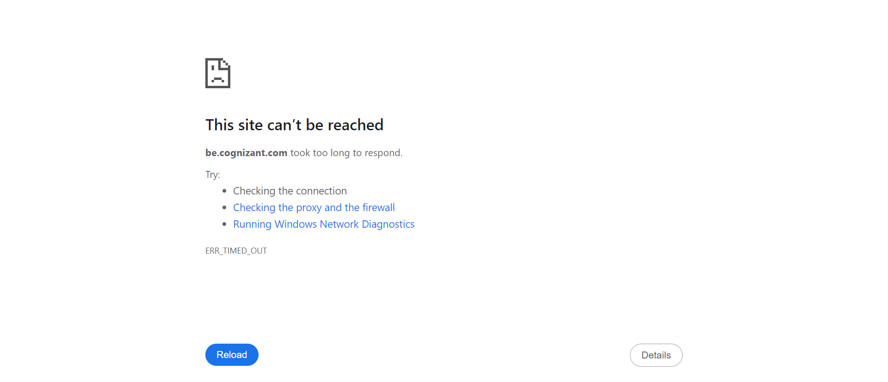

-
Validating TruTime Functionalities
10:04:22 AM / 00:01:49:580 Fail
Validating TruTime Functionalities
02.21.2024 10:04:22 AM 02.21.2024 10:06:11 AM 00:01:49:580 · #test-id=1FailSuccessful ValidationGiven the user is on the be.cognizant pageCucumber.stepDefinitions.Hooks.addScreenshot(io.cucumber.java.Scenario)Successful ValidationWhen the user clicks the profile icon at the top corner of the pageCucumber.stepDefinitions.Hooks.addScreenshot(io.cucumber.java.Scenario)Successful Validation And check the informations displayed or notStep skippedThen his/her name and email is capturedStep skippedFailSuccessful Navigation to Tru TimeGiven In the be.cognizant page validating OneCognizant app is visbile or notCucumber.stepDefinitions.Hooks.addScreenshot(io.cucumber.java.Scenario)Successful Navigation to Tru Time
And check the informations displayed or notStep skippedThen his/her name and email is capturedStep skippedFailSuccessful Navigation to Tru TimeGiven In the be.cognizant page validating OneCognizant app is visbile or notCucumber.stepDefinitions.Hooks.addScreenshot(io.cucumber.java.Scenario)Successful Navigation to Tru Time When clicking the Onecognizant appCucumber.stepDefinitions.Hooks.addScreenshot(io.cucumber.java.Scenario)Successful Navigation to Tru Time
When clicking the Onecognizant appCucumber.stepDefinitions.Hooks.addScreenshot(io.cucumber.java.Scenario)Successful Navigation to Tru Time And switching to next windowStep skippedAnd click on the search iconStep skippedThen type Trutime and click searchStep skippedAnd select trutime from the searchStep skippedFailSuccessful validationGiven Navigating to trutimeCucumber.stepDefinitions.Hooks.addScreenshot(io.cucumber.java.Scenario)Successful validation
And switching to next windowStep skippedAnd click on the search iconStep skippedThen type Trutime and click searchStep skippedAnd select trutime from the searchStep skippedFailSuccessful validationGiven Navigating to trutimeCucumber.stepDefinitions.Hooks.addScreenshot(io.cucumber.java.Scenario)Successful validation And extract dates of week and daysStep skippedAnd check those dates with system date and validate itStep skippedWhen checking the date format to see if the current date is highlighted or notStep skippedThen Validate backdated topup date is visible or notStep skippedAnd Current month and year should match with System calendarStep skippedAnd Print all legendsStep skipped
And extract dates of week and daysStep skippedAnd check those dates with system date and validate itStep skippedWhen checking the date format to see if the current date is highlighted or notStep skippedThen Validate backdated topup date is visible or notStep skippedAnd Current month and year should match with System calendarStep skippedAnd Print all legendsStep skipped
-
org.openqa.selenium.NoSuchElementException
2 tests
org.openqa.selenium.NoSuchElementException
2 failedStatus Timestamp TestName Fail 10:04:22 AM When the user clicks the profile icon at the top corner of the page Validating TruTime Functionalities.Successful Validation.When the user clicks the profile icon at the top corner of the pageFail 10:05:13 AM When clicking the Onecognizant app Validating TruTime Functionalities.Successful Navigation to Tru Time.When clicking the Onecognizant app -
java.lang.IndexOutOfBoundsException
1 tests
java.lang.IndexOutOfBoundsException
1 failedStatus Timestamp TestName Fail 10:06:08 AM Given Navigating to trutime Validating TruTime Functionalities.Successful validation.Given Navigating to trutime
Started
Feb 21, 2024 10:02:48 AM
Ended
Feb 21, 2024 10:06:13 AM
Features Passed
0
Features Failed
1
Features
Scenarios
Steps
Timeline